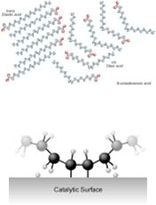

| Chapter 8.4: Catalysis |
A catalyst provides an alternate pathway for a reaction to occur; more importantly, this pathway involves a lower activation energy than the uncatalyzed pathway. This means that the rate of the reaction can increase since, at a given temperature, the rate at which collisions with enough energy to overcome the new lower activation energy barrier occur more frequently. But because the catalyst is neither a reactant or a
product of the reaction, it does not influence the reactions’s
overall energy change. In biological systems, there are protein and
RNA-based catalysts (enzymes and ribozymes); in non-living systems
minerals and metals often act catalysts. Even such simple ?species
as protons can be considered as catalysts. Anything that is unchanged
at the start and the end of the reaction can be considered a catalyst.
As we will see, there are many different mechanisms by which catalysts
can act. |
8.1 How for, how fast? |
Biological catalysts are generally very selective in terms of the reactions they catalyze and very effective in speeding reactions up. It is not uncommon for the rate of a catalyzed reaction to be millions of times faster than the uncatalyzed reaction. That said, there are many examples where enzymes catalyze “off-target” reactions of the same or different types (although these reactions are generally accelerated to a much lesser extent). This ability to catalyze a range of reactions occurs because the surfaces of enzyme molecules are complex and can often accommodate (and bind) a range of molecules, they can be promiscuous. The common conception of an enzyme as a lock and the reaction it catalyzes as its only key is far too simplistic, in reality there are many molecules that can bind to a specific active site in an enzyme. While the mode of action of enzymes varies, in many cases the active site holds the two reactive molecules in close juxtaposition which can speed their reaction (can you imagine why?) An organic chemical reaction that requires a catalyst is the addition
of hydrogen across a C=C bond. Without the catalyst this reaction
would not occur on a human timescale, but it is an important reaction
in many pharmaceutical syntheses, and in the production of fat (solid)
from oil (liquids). |
| For example: margarine is produced by adding hydrogen to the C=C bonds of oils extracted from plants. The removal of the C=C bond makes the molecules pack better together (since London dispersion forces can now act upon the whole length of the molecule, this increases the strength of the van der Waals interactions between the molecules) and therefore the hydrogenated oil is a solid at room temperature. The catalyst is usually a ?transition metal, palladium (Pd) or platinum (Pt), finely divided and adsorbed onto the surface of an inert substance like charcoal (carbon). The transition metal has empty d orbitals that can interact with the C=C bond’s pi orbital – destabilizing the pi bond and making it more susceptible to reaction. x |  |
Unfortunately, in many cases the hydrogen
does not add across the double bond; instead the bond isomerizes
from cis to trans, thus forming the unnatural trans isomer, which
has been implicated in the development of heart disease.Unfortunately, in many cases the hydrogen
does not add across the double bond; instead the bond isomerizes
from cis to trans, thus forming the unnatural trans isomer, which
has been implicated in the development of heart disease. |
8.1
How for, how fast? |
Question to answer:
|
| 17-Jun-2012 |